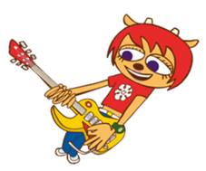
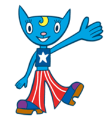
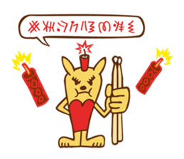
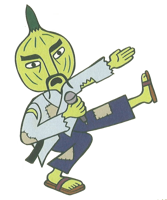
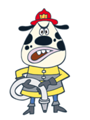
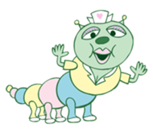
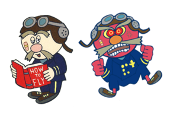
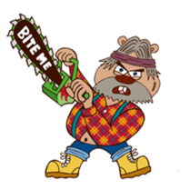
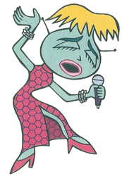
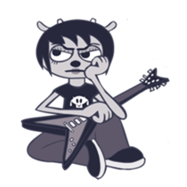

MilkCan

Lammy: Protagonist and main character of the story.
She's the guitarrist of the all-girl band MilkCan. She's normally very
shy and cowardly, but whenever she's with her guitar, she lets her bold
stage persona come through.
 Katy Kat: The tall, cheerful and outgoing singer, bassist and leader of MilkCan. She tends to have ambitious ideas, and is also part of PaRappa's friend circle.

Ma-san: The small, yet hot-tempered drummer of Milkcan.
Speaks in her own language different from the rest of the cast's,
which is represented through symbols.
The Teachers
 Chop Chop Master Onion: After teaching Parappa karate in the first game, he returns in this game in a disheveled, but no less disciplined state, having lost his dojo, money and posessions due to unknown reasons. However, in his mind he does believe that it is still on business and even has a casino, which leads Lammy to start thinking of casinos whenever she needs to solve a problem.
 Chief Puddle: The leader of a team of firefighters in PaRappa Town. Tells Lammy to help fight a fire if she wants to keep on going and ends up giving her a pizza afterwards.
 Cathy Pillar: A nurse at the local daycare, who Lammy just happens to end up encountering after rushing towards her destination. Confuses Lammy for pregnant, and seems to have an habit of puking randomly.
 Captain Fussenpepper: An elderly plane pilot with an split personality - one of which is dorky and airheaded, the other a fearsome commander with a constant temper. Uses fake teeth.
 Paul Chuck: The owner of a custom guitars shop, with an impatient and stubborn personality. Chops trees down for fun, and generally doesn't care about others' opinions on what he does. Reclutantly lets Lammy make her own guitar with his guidance.
 Teriyaki Yoko: A singer from hell (or in the US version, an island). She's a diva with very high standards, and she's also willing to punish you severely if you fail to impress her.
Others

Rammy: The resentful doppelgänger of Lammy from hell,
and the other playable character in two of the multiplayer modes.
She used to be the guitarrist for Teriyaki Yoko until the end of Stage 6,
where, just after the end of the song she transports herself into the stage
area through a fax machine, with clear envy towards Lammy.
 Parappa: Our previous protagonist returns in this
spinoff, with his own playable mode and a little story arc (albeit
unrelated to the actual stages) focusing on his hilarious attempts to
start a band with PJ inspired by MilkCan.
Parappa: Our previous protagonist returns in this
spinoff, with his own playable mode and a little story arc (albeit
unrelated to the actual stages) focusing on his hilarious attempts to
start a band with PJ inspired by MilkCan.